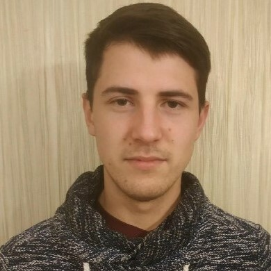

Iakov
Riumin

Contact
Address:
Šípková 3700/3, 811 04 BratislavaPhone:
(+421)951551228
Email:
Hobbies
- Computer-sciense
- Astronomy
- Microelectronics
- neural networks
(+421)951551228
Najlepší človek na svete. Ovládam všetky programovacie jazyky. Bohaté skúsenosti s písaním CSS, CSI, KGB, FBI. Pripravený pracovať pre jedlo.
Operátor CNC stroja 01/2018 - 09/2020
Edel'veys Solyushns Petrohrad
Banský inžinier 07/2011 - 06/2016
Saint Petersburg Mining University, St Petersburg (Rusko)